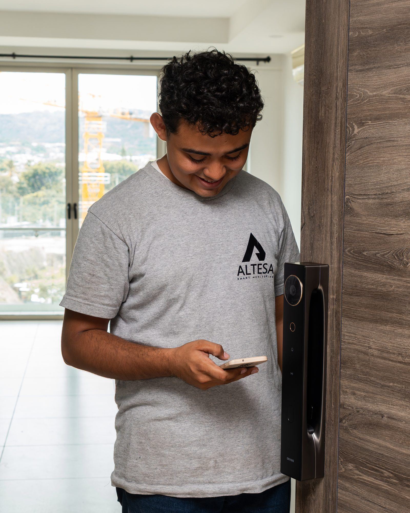
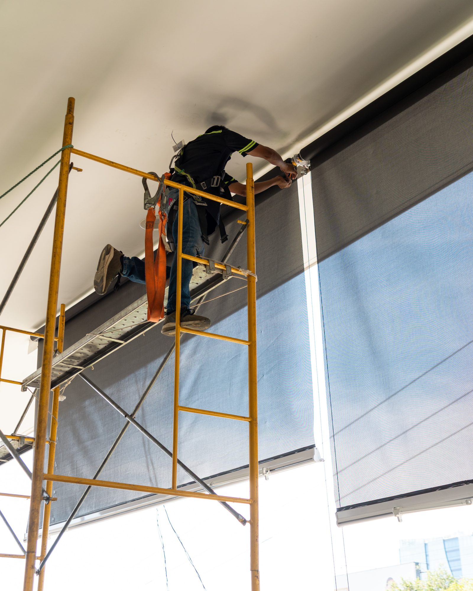
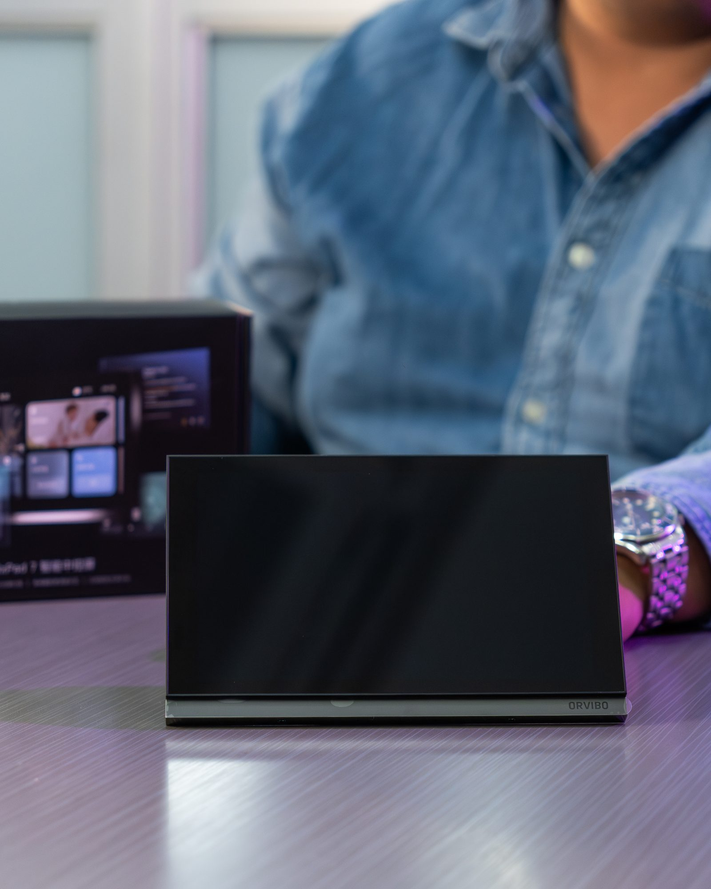

Integración e instalación
Iluminación, cortinas, audio, clima, accesos y control central sobre un solo ecosistema.
- Diseño desde planos
- Cableado estructurado
- Programación de escenas

Servicios
Diseñamos, instalamos, monitoreamos y damos mantenimiento. Todo con el mismo equipo, bajo un solo responsable.
Cómo trabajamos
Un proceso que se acopla al cronograma de obra del arquitecto.

Recorremos el sitio o revisamos el plano con usted. Levantamos necesidades reales, identificamos restricciones eléctricas y de red, y definimos el alcance. Sin costo y sin compromiso.
Entregamos plano de puntos, cantidad de dispositivos por ambiente y presupuesto por etapas. Cuidar el bolsillo del cliente es parte del diseño: se especifica lo que el proyecto necesita, con alternativas por rango.
Coordinamos con el maestro de obra y el electricista para dejar previsiones desde obra gris. Cableado estructurado, gabinete técnico ordenado y etiquetado, cero improvisación.
Programamos escenas, horarios y automatizaciones con el cliente presente. Se entrega la casa funcionando y a la gente sabiendo usarla — que es lo que realmente define si el sistema se usa.
Central 24/7, reacción armada y planes de mantenimiento preventivo para que los equipos duren lo que deben durar.
Qué hacemos
Iluminación, cortinas, audio, clima, accesos y control central sobre un solo ecosistema.
Software de central que facilita la reacción inmediata ante cualquier evento. Inmuebles, vehículos, personas y grupos.
Grupo ALTESA, nuestra filial de agentes, atiende en sitio los eventos que la central confirma.
Planes preventivos para sistemas de intrusión, cámaras y automatización, para asegurar la durabilidad de los equipos en el tiempo.
26 años nos respaldan. Somos expertos en diseño y elaboración de protocolos de seguridad para residencia, empresa e institución.
Cuidar su presupuesto es prioridad. Dimensionamos el proyecto a lo que realmente hace falta y proponemos etapas para evitar gastos adicionales.
Central de monitoreo
ALTESA nació hace 26 años como central de monitoreo de alarmas. Esa operación sigue viva: cuando un sensor de la casa que automatizamos detecta algo, la señal llega a una central atendida por personas, las 24 horas.
El monitoreo cubre inmuebles, vehículos, mascotas, personas y grupos, con la app SmartPanics para reportar incidencias con geolocalización.


Empecemos
Cuéntenos en qué etapa está el proyecto y coordinamos el levantamiento.